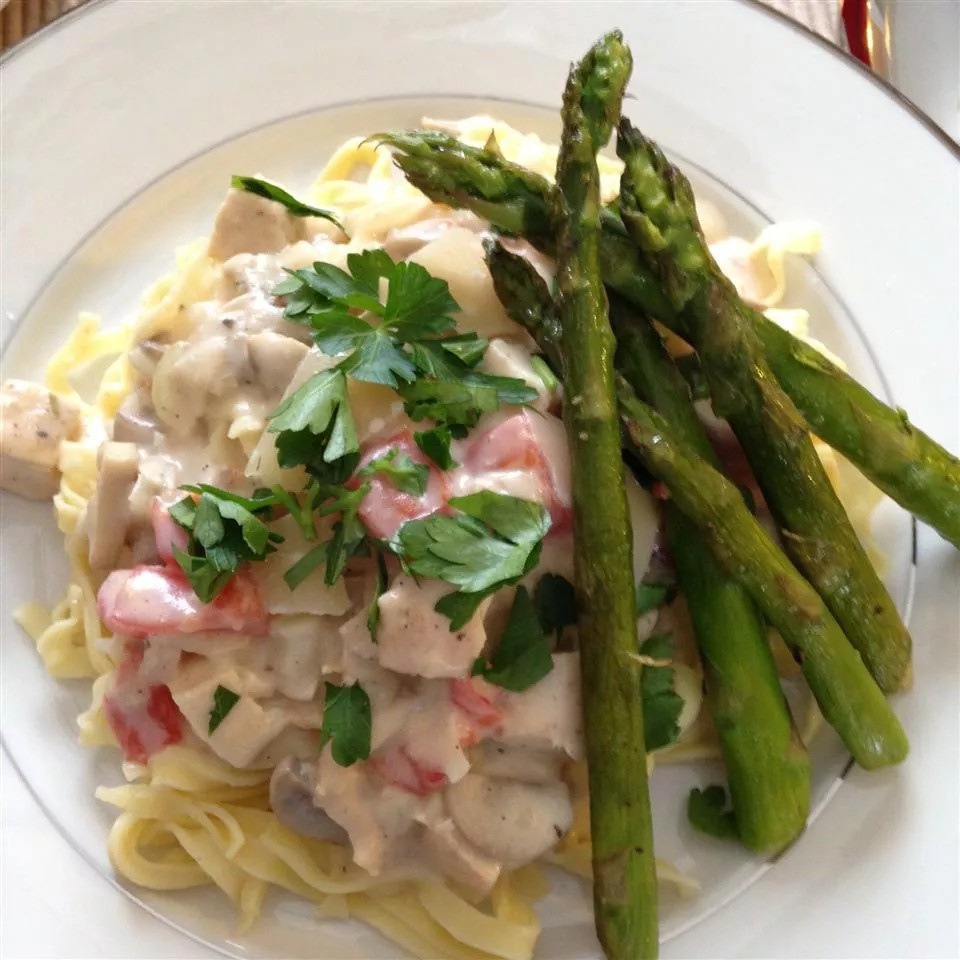

Alfredo Affair: Tempting Creamy Chicken Fettuccine Alfredo
A traditional Italian-American pasta dish, Creamy Chicken Fettuccine Alfredo is renowned for its deep, decadent flavor.
It has fettuccine noodles mixed with seasoned, soft chicken chunks and covered in a smooth Alfredo sauce.
The sauce has a thick, creamy texture that sticks to the pasta since it's made with butter, heavy milk, and Parmesan cheese.
This meal, which is frequently topped with more cheese and fresh parsley, has a delicious combination of cheesy, salty, and creamy flavors.
Creamy Chicken Fettuccine Alfredo is a favorite in many homes and restaurants because of its reassuring and fulfilling properties.
It's ideal for a special event or a private evening.
Ingredients
- 6 tablespoons butter, divided
- 6 skinless, boneless chicken breast halves, cut into cubes
- 4 cloves garlic, minced, divided
- 1 tablespoon Italian seasoning
- 1 (16 ounce) package fettuccine pasta
- 1 onion, diced
- 1 (8 ounce) package sliced mushrooms
- ⅓ cup all-purpose flour
- 1 tablespoon salt
- ¾ teaspoon ground white pepper
- 3 cups milk
- 1 cup half-and-half
- 8 ounces shredded Colby-Monterey Jack cheese
- ¾ cup grated Parmesan cheese
- 3 Roma (plum) tomatoes, diced
- ½ cup sour cream
Steps to Perfect Creamy Chicken Fettuccine Alfredo
- Melt 2 tablespoons butter in a large skillet over medium heat.
Add chicken, 1/2 of the garlic, and Italian seasoning.
Cook until chicken is no longer pink in the center and the juices run clear.
An instant-read thermometer inserted into the center should read at least 165 degrees F (74 degrees C).
Remove from the skillet and set aside.
- Fill a large pot with lightly salted water and bring to a rolling boil.
Cook fettuccine at a boil until tender yet firm to the bite, 8 to 10 minutes. Drain.
- Meanwhile, melt remaining 4 tablespoons butter in the skillet.
Add onion, mushrooms, and remaining garlic; sauté until onion is transparent, about 5 minutes.
Stir in flour, salt, and pepper; cook for 2 minutes.
Slowly add milk and half-and-half; cook and stir until smooth and creamy.
Stir in both cheeses until melted.
- Stir in chicken mixture, tomatoes, and sour cream. Serve over cooked fettuccine.